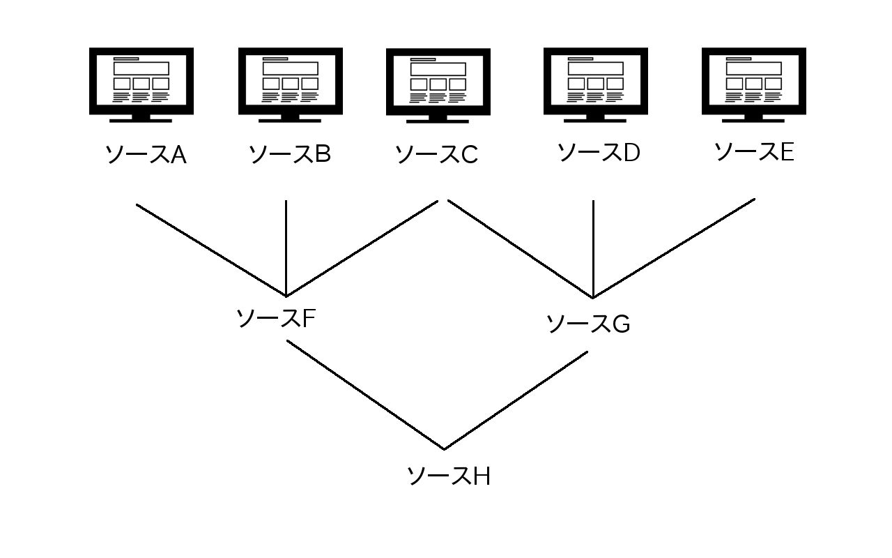
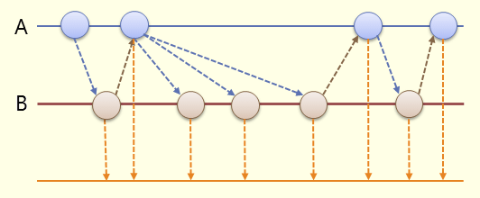

Apache Camel と RxJava による
データフロー実装
by しうへい / @cuhey3
自己紹介
- 職業：Webエンジニア（2016/2〜）
- 以前は事務の会社で業務支援をしてました
- 深刻な声優オタク（お仲間募集中）
Apache Camel歴とか
- 4年弱 / きっかけは萌え擬人化で声優さんがついた事
- 半年に一度のOSCで、daikuroさんに教えを請いながら現在に至る
- SPAのバックエンド+色々コンポーネント的な使い方
- 趣味のスクレイピングでも常用
Apache Camelの良い所
- コンポーネント、コンバーターが豊富
⇒ オープンソースプロダクトとの出会いも提供してくれる。
- インテグレーションプラットフォームとして、安心感がある
⇒ 「これとこれの組み合わせはダメ」とかが原理的に存在しない。
- コアが軽量で、Javaのシステムに組み込みやすい
⇒ コンポーネントと環境の間の干渉にだけ気をつけていればよい。
- Fluent Builderによるルート定義の、ワンライナー感が気持ちいい
⇒ 見通しが良く、再利用が容易。
Apache Camelの微妙な所
そんなのある？-
学習コストが高い（…というか用語が何を言ってるのかわからない）
⇒ daikuroさんの記事を元に動かしてみて、
実際動いたらそれでOK、という風に一旦考えましょう。
-
「Apache Camelじゃないとできないこと」って何？
⇒ クリティカルな要素はないかもしれない。でも便利。
-
Enterprise Integration Patterns実装なので、EIPに定義されていない機能は期待できない
それでもやっぱり…
豊富なコンポーネントは魅力！
ぜひ使ってみてほしいフレームワークです。
鉄板だと思うコンポーネント
- camel-jetty
- camel-websocket
- camel-jackson (JSON)
- camel-spring-boot
- camel-rx (RxJava)
…とは言うものの、ユーザーによって
使い込んでるコンポーネントは全く違うと思います。
オフィス用途ではfile2コンポーネントが大活躍でした。
＿人人人人人人人人人人＿
＞ Apache Camel + RxJava ＜
￣Y^Y^Y^Y^Y^Y^Y^Y^Y^Y￣
事例

- ソースA〜Eを起点として、二次ソースF・G、さらにソースHを生成したい
- A〜Eが更新されたら他も自動的に再計算してほしい（データフロー）
- 依存関係はなるべく自由に設定できるようにしたい（循環参照だけ不可）
それ、Reactive Extensionsでできます。
Javaの場合は、RxJava
combineLatestメソッド
各ソースの更新があった場合に、
その時点の最新の各ソースを使って再計算する

イベント・プログラミングとRx - @ITより引用
※この図ではソースは2種類だけど、10種類とかでもいける
RxJava と Apache Camel を
組み合わせて使う
Why Apache Camel?
-
好きだから。
- 豊富なコンポーネント・コンバーターと組み合わせたいから
- EIPの文法も便利だし、組み合わせて使いたいから
- Observableの生成部分が見通しよく書けるから
Why not only Apache Camel?
Apache Camelでは、Consumerエンドポイントと
Producerエンドポイントを一対一、セットで書いていくのが基本。
このためソースの依存関係が増大するにつれて、
ルート定義では依存関係を書ききるのがつらくなってくる。
RxJavaを使ってObservableに変換してしまえば、
自由なPublish/Subscribeが可能になるので、この問題を克服できる。
Apache Camel では、
任意のdirectエンドポイントからObservableを生成できます。
// ルート定義
@Override
public void configure(){
from("timer:hello?period=1s")
.setBody("hello.")
.to("direct:hello_observable");
}
// どっかのコード
ReactiveCamel rc = new ReactiveCamel(camelContext);
Observable<String> helloObservable = rc.toObservable("direct:hello_observable",String.class);
// あとは煮るなり焼くなり
Observable<String> greetingObservable;
greetingObservable = Observable.combineLatest(helloObservable,goodByeObservable,
(str1, str2)->str1+str2);
＞＞ どっかのコード ＜＜
ちょっとだけ検討を重ねた結果、
RouteBuilderクラスのコンストラクタに書くのが良いと思いました。
サンプルコードをご覧ください。
実装の流れ
- コンストラクタ内で、参照するソースをcombineLatestして
起点となるObservableを生成する。
- ルート定義へsend
- ルート定義内の処理を完了し、再度RxJava側へsend
- 受け取ったObservableを、自分自身をあらわすObservableとして、
メンバ変数へバインド
実装の流れ（一次ソースの場合）
- コンストラクタ内での、起点となるObservableの生成は不要
- ルート定義内のtimer(あるいはquartz2)処理を起点とする
- ルート定義処理が終わったら、RxJava側へsend
- 受け取ったObservableを、自分自身をあらわすObservableとして、
メンバ変数へバインド
実装上の注意点
- Observableと言ってきたけど、そのままではPub/Subで失敗します。
- Observable#publish() でConnectableObservableに変換してからの、
ConnectableObservable#connect()でPub/Subが可能になる。
- サンプルコードにも入ってますので、そちらを参照ください。
- 他にDIの機能がないとどのみち厳しいかもしれません。
サンプルではこっそりSpring Bootを使っています。
まとめ
Apache Camel と RxJava を組み合わせると、
自由度の高いデータフローが簡潔に実装できます！